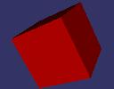
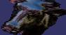

|
sgv cow.osg |
The scene graph viewer demo uses osgGLUT::Viewer to bring up a basic viewer. To find out what
command line arguments it takes simply run sgv without any arguments. To load a model simple
run sgv filename.ext. The osgGLUT::Viewer provides an extensive set of operations that can be
used to display information about the loaded database such as peformance stas, through to
output a snapshot of the screen, which is how these thumbnails were created. For a full list
of key presses and mouse interaction read the sgv documentaion. |
 |
sgv -stereo cessna.osg |
The scene graph viewer also supports anaglyphic, quad buffered, and split screen stereo modes,
for a full list of options and environmental variables see the stereo documentaion. |
 |
hangglide |
The hang glide demo creates a simple flying site (Don Burns local hang glide site infact!),
demonstrating how to create simple terrain, trees and skydomes, and how to implement a simple
flight camera manipulator to allow the user to fly around.
. |
 |
osgbillboard lz.rgb |
. |
|  |
osgcube |
. |
 |
osghud glider.osg |
. |
 |
osgimpostor Town.osg |
. |
 |
osgreflect cow.osg |
. |
 |
osgscribe.cow.osg |
. |
 |
osgstereoimage left.rgb right.rgb |
. |
 |
osgtext |
. |
 |
osgtexture lz.rgb reflect.rgb |
. |
|  |
osgviews.cow.osg |
. |